Dev by: Pacharapon Ketkaew, Teerapuwanai Chanachaisombud Art by: Chadapak Thanaphopmongkhon, Wasita Nuansri
Signful Dream Game Mechanics
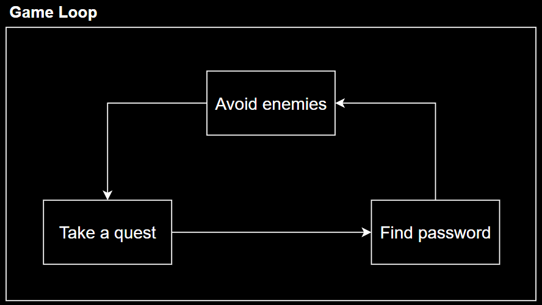
Gameplay Preview
Features
GhostData Class
The GhostData class implements a Data-Driven Design using Unity's ScriptableObject. This approach decouples ghost attributes and visual assets from the core game logic, allowing for easy content creation and balancing without code modifications. It centralizes essential data—such as dialogue, progression stages, and asset references—ensuring memory efficiency.
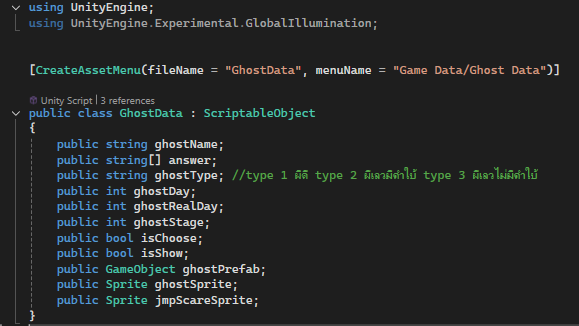
Ghost Data Asset
Example of creating GhostData using ScriptableObjects for efficient data management in the Unity Inspector.
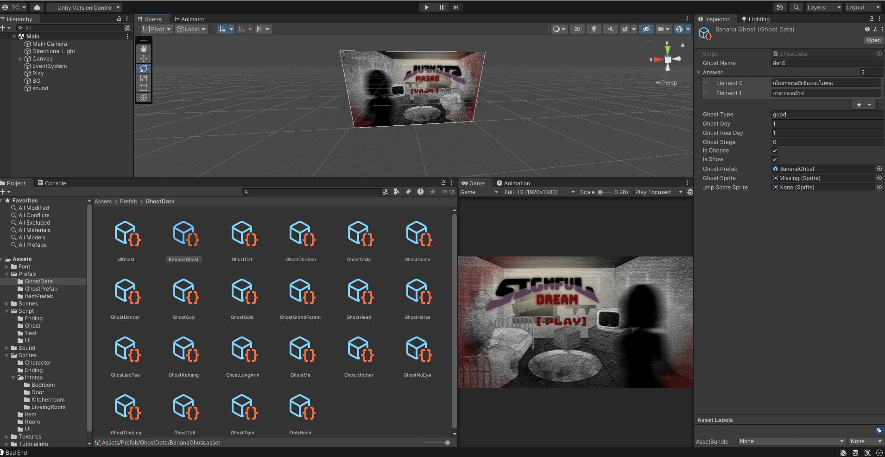
GhostData Container
The GhostDatabase class serves as a Centralized Data Container for all ghost assets within the game. By utilizing a ScriptableObject-based List, I established a 'Single Source of Truth' that allows for organized data management and seamless access across various game systems.
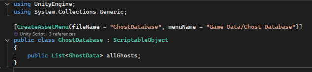
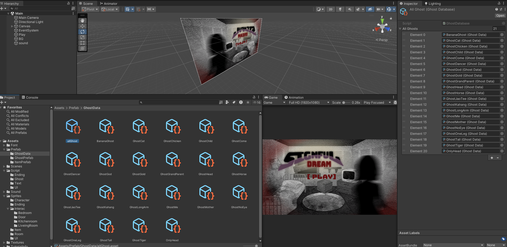
GhostSpawner Class
The GhostSpawner class serves as the core execution layer. It utilizes a Dictionary-based system to efficiently track and manage object creation, while incorporating Runtime Optimization by managing asset reuse directly through a ScriptableObject-driven approach.
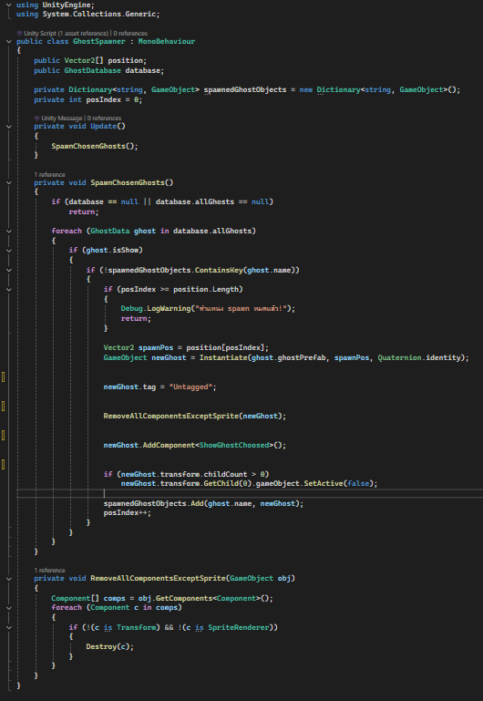
GhostControl Class
The GhostControl class manages the Interaction Logic and Player State. It acts as a bridge between the back-end data and the front-end presentation, handling gameplay consequences and Sanity Meter changes based on player choices.
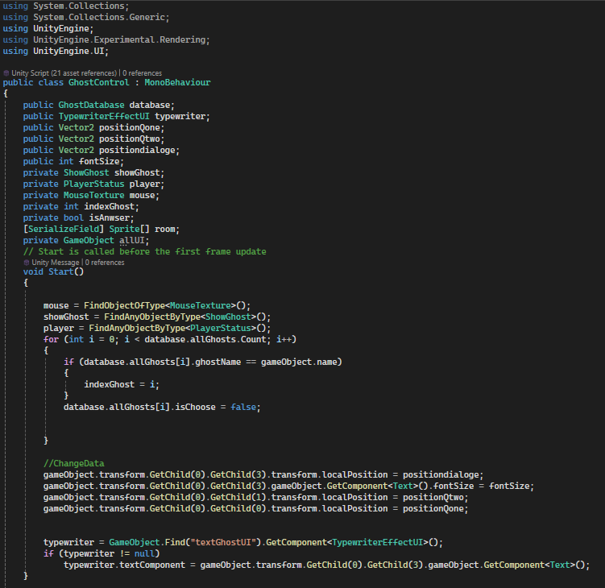
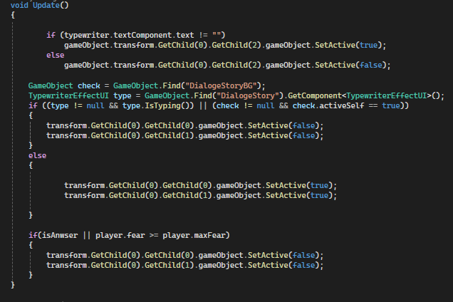
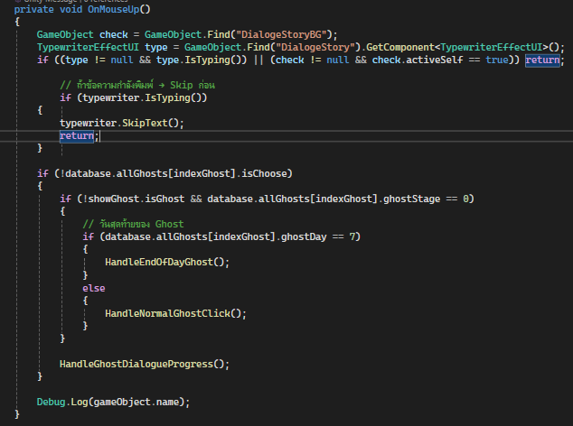
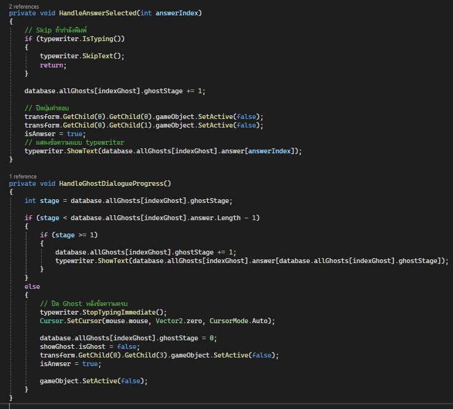
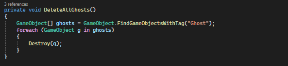
Project Management
I utilized Notion for time management and task delegation, ensuring the project was successfully completed within the game jam deadline.
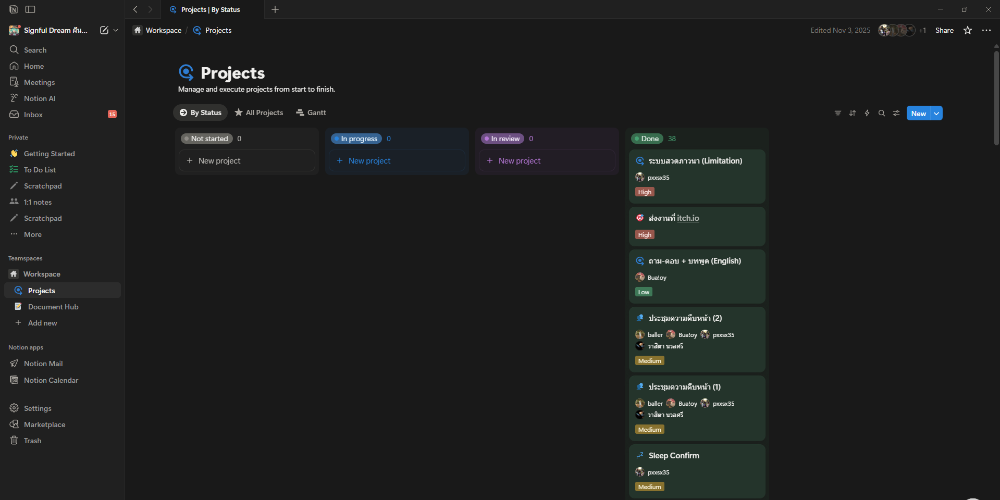
What I Learned
Through this project, I gained hands-on experience using ScriptableObjects for efficient data management in Unity. I learned how to develop a Sanity Meter system where player choices directly impact the game's outcome. Additionally, I improved essential soft skills in team collaboration and performing under high-pressure constraints.